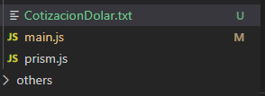
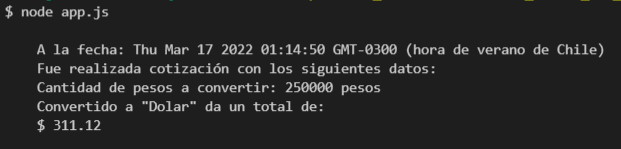
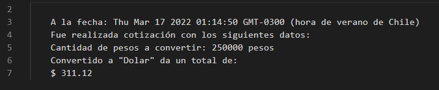
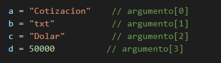
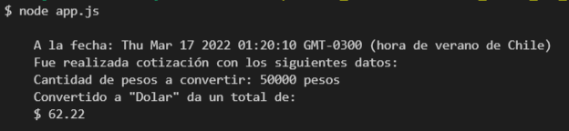
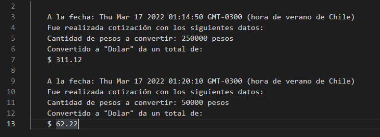

//recepcion de argumentos ingresados por linea de comandos
const argumentos = process.argv.slice(2)
//almacenamiento de argumentos en variables
var nombre = String(argumentos[0])
var extension = String(argumentos[1])
var indicador = String(argumentos[2])
var cantidad = Number(argumentos[3]) //consulta metodo get a la API
https.get(`${urlAPI}`, (resp) => {
//almacenando la data
let data = '';
resp.on('data', (chunk) => {
data += chunk;
});
resp.on('end', () => {
let jsonData = JSON.parse(data);
//llamado a la funcion
registroCotizacion(jsonData)
})
})
.on('error', (err) => {
console.log('Error: ' + err.message); // Impresión por consola del error
}); //crear archivo
const fs = require('fs')
//leer el archivo
fs.readFile(`${archivo}`, 'utf8',
(err, data) => {
//nueva insercion
fs.writeFile(`${archivo}`, data +
`
${contenido}`, 'utf8',
() => {
//mostrar por consola la nueva insercion
//se da solucion al requerimiento 4
console.log(contenido)
}
)
}
) // Argumentos
a = "Cotizacion" // argumento[0]
b = "txt" // argumento[1]
c = "Dolar" // argumento[2]
d = 250000 // argumento[3]
var exec = require('child_process').exec
var modulo = `node main.js ${a} ${b} ${c} ${d}`
// donde se ejecuta con node main.js
exec(`${modulo}`, function (err, stdout, stderr) {
console.log(stdout)
})archivo creado al que se le concatena en el nombre tambien el indicador
resultado en consola tras la ejecucion
contenido del archivo correspondiente
se realiza un cambio en la cantidad en el argumento 3 para prueba de nueva cotizacion.
nuevo resultado por consola de la nueva Cotizacion
contenido tras la nueva cotizacion
testeando la librearia prismjs para dar estilo a codigo insertado en html
Para probar aplicacion se debe ingresar primero mediante la linea de comandos a la ruta del archivo, en este caso directorio/assets/js e ingresar 'node app.js'